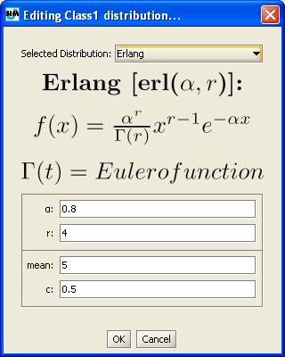

Define Classes
_________________
Customer classes identify different customer behavior
and characteristics, such as the type (closed or open), the size of the
customer population (for closed classes) or the interarrival time distribution
(for open classes).
They can be set using the Classes tab during the creation of a new
model.
Adding a Class
Classes must be explicitly added to the model, either one at
a time by clicking the button, or by
selecting directly the final number of classes desired in the form
.
The newly added classes will be listed with deafult parameters.
Double click on the default name (ClassN) to change it.
Each new class has a priority in the system.
A smaller number indicates a lower priority. Default value is 0
and it can be changed by double clicking on the corresponding area.
Defining the Class Type: Open Classes
After adding a class and possibly changing its name
and priority,
you must choose the type of customers comprising the class. Classes
are created Closed by default, so if you want an Open class, select
the type Open in the menu
The class characteristics looks like this now
Open classes describe customer populations that vary
during time, therefore they are best characterized by the probability
distribution of the interarrival time, rather than by a constant
number of customers.
The default Interarrival Time Distribution is exp(1) (Exponential Distribution
with λ =1).
To change the Interarrival Time Distribution click the Edit button

The following window will appear
|
 |
Click on the
Selected Distribution drop down menu to choose from any of the following
distributions:
|
In each case, it is possible to configure the distribution
parameters as you wish, or use the default values. Parameters that are related
among each other are automatically adjusted if one is modified (for example,
the figure shows how for an Erlang distribution, if you set the
(alfa, r) pair, the (mean, c) pair is automatically adjusted to the correct
value).
The Replayer distribution allows you to provide data traces from files.
Click OK when you are done to return to Class parameters definition.
The final step in defining a class is the definition of
the Reference Station, i.e., that station in the model with respect to which
the performance indices will be computed. For Open classes there is no
choice since the Source station is the unchangeable default Reference Station
used to compute System Throughput for all the Open classes.
Defining the Class Type: Closed Classes

Classes are created Closed by default, so there is not
need to change the Type. Priority can be changed as in the Open class case.
The population size is the parameter that characterizes a Closed class.
It is fixed and does not change for the entire life of the system.
By default is 1 and it can be changed by clicking on the corresponding
area in the class properties matrix.
The final step is to define a Reference Station for the
class that will be used to compute the performance indices selected for
the class. Use the Reference Station tab menu to select the Station.
All stations but the sink can be
used as reference station for a closed class.